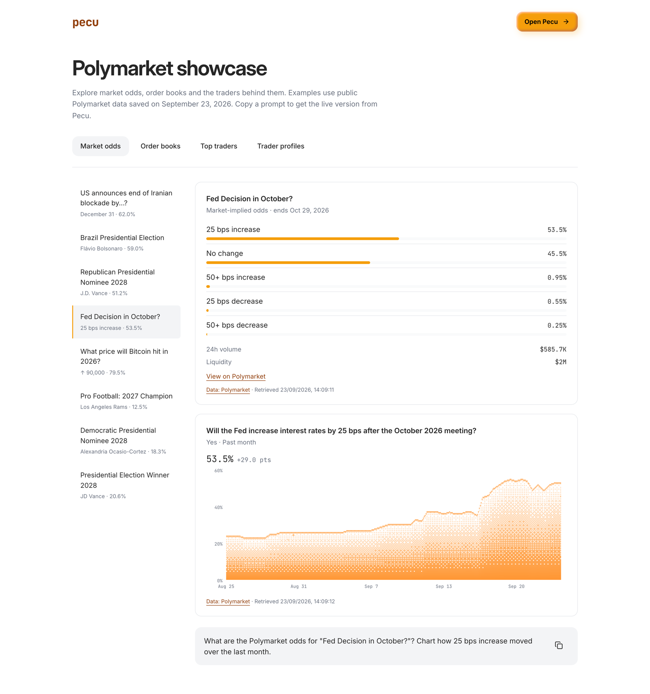
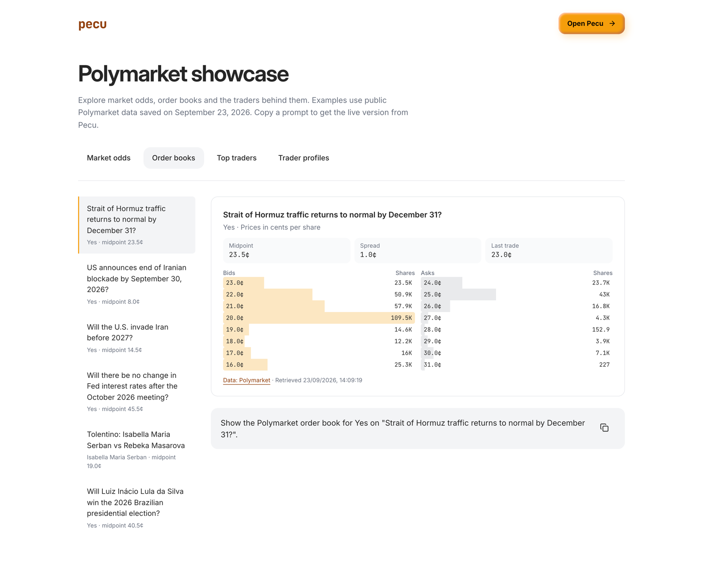
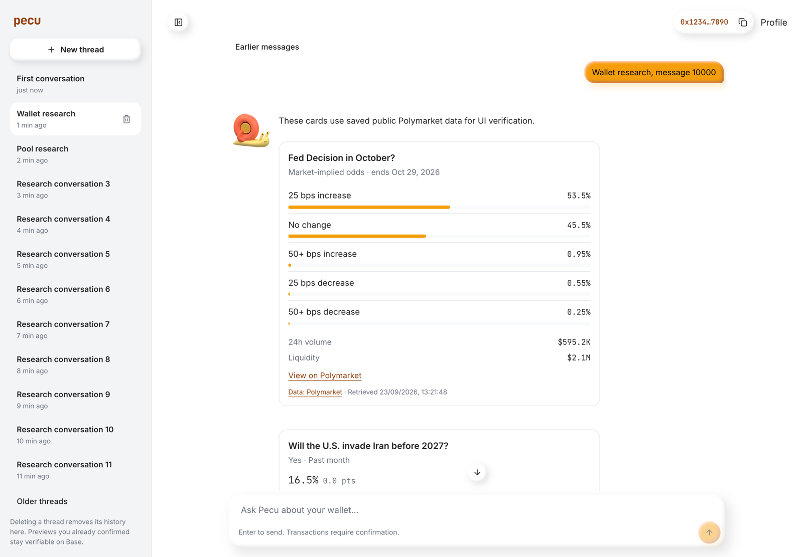
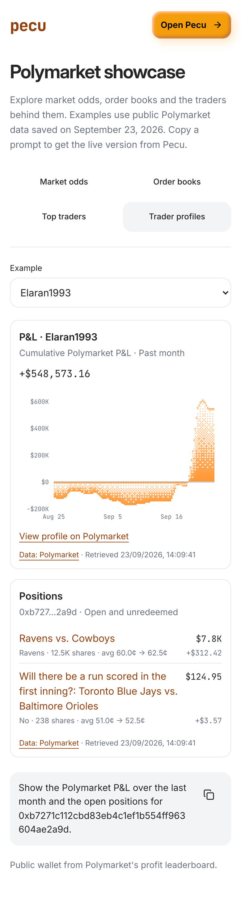

Live at pecu.app/polymarket-showcase since 23 September 2026.
The page follows the Nansen showcase: four sections, a list of examples, the cards, and a prompt to copy into Pecu.
The data is saved from 48 free public reads. Switching examples makes no request. bun scripts/polymarket/showcase.ts refreshes it.


The showcase and chat use the same cards and the same card builder. In Agent and Stocks chat, these Polymarket reads now attach a card: markets, events, search, price history, order books, leaderboards, biggest wins, user P&L and user positions. X Chat gets the same content as text. A direct /polymarket read command whose only output is one card shows just the card.
Odds show as percentages, books in cents per share and sizes in shares. Missing prices stay unavailable, and a read with more pages says so.

Screenshots of chat use saved public data.

Commit 9e6ed3df on main, not pushed. Deployed basedbot, aero-stocks and pecu-app from that commit.
Another agent's docs-site work was uncommitted in the same files. It was left out of the commit and the deploys.